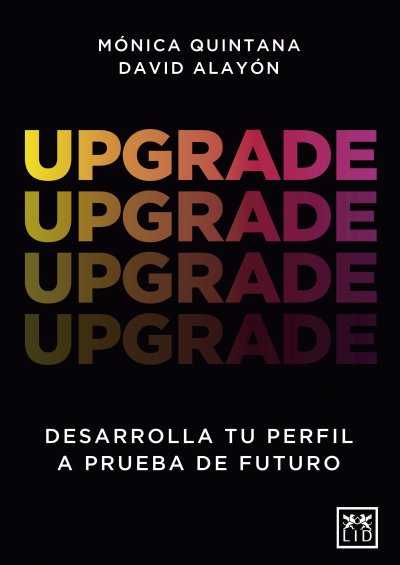

Tiempo de futuros

- ★ sin la capacidad de imaginar futuros mejores, estamos condenados a la deriva, a navegar sin rumbo, dejándonos llevar por las corrientes del presente sin capacidad de elegir dirección, reaccionando constantemente a lo que viene sin anticipar ni moldear activamente hacia dónde queremos ir. Y los futuros mejores nunca llegan por inercia. Construir un mañana deseable requiere esfuerzo deliberado, visión compartida y acción sostenida. Es luchar contra la entropía, contra esa tendencia natural de los sistemas a degradarse hacia el desorden si no aplicamos energía para mantenerlos o mejorarlos. Sin ese esfuerzo consciente, no llegaremos a ningún futuro mejor, solo a versiones desgastadas del presente.
- Porque imaginar futuros mejores es una competencia desarrollable, un músculo que podemos entrenar
- inventamos el futuro como concepto abierto y modificable
- por anticiparlo mediante oráculos y almanaques; cómo la ciencia ficción expandió radicalmente nuestra capacidad de imaginar futuros posibles y cómo las utopías y distopías moldearon nuestro imaginario colectivo.
- futuro dejó de ser profecía para convertirse en «ciencia», profesionalizándose en los estudios de futuros que pasaron de predecir un futuro único a explorar futuros múltiples, diversos e inclusivos.
- la aceleración tecnológica han erosionado nuestra capacidad de pensar a largo plazo
- exploración, donde aprendemos a identificar señales de cambio y a profundizar en los patrones emergentes que moldean nuestro presente; imaginación, donde construimos escenarios múltiples que nos permiten explorar futuros posibles y creamos narrativas que los hacen tangibles y movilizadores; y estrategia, donde negociamos visiones compartidas y las traducimos en acciones concretas que transforman el presente
- entendemos que el futuro no se predice, se diseña.
- Es tiempo de futuros. Tiempo de imaginar, de diseñar, de actuar.
- el tiempo no era lineal sino cíclico, y esta percepción no era una limitación cognitiva, sino una respuesta perfectamente lógica al mundo que habitaban.
- conciencia arcaica
- eterno ahora
- no había distancia psicológica entre el sujeto y el objeto, entre el yo y el entorno
- Así vivían las primeras civilizaciones humanas, presentes en un constante fluir
- El amanecer de todo (2022), no hubo una revolución, sino una transición hacia la agricultura.
- No fue una transformación repentina ni uniforme, sino que durante siglos fue algo estacional que se combinó con la caza, y donde se mantuvo una vida móvil y flexible. Pero incluso en esta transformación gradual, algo fundamental cambió en nuestra relación con el tiempo.
- cada cosecha, cada ritual, reproducía un orden cósmico eterno✎ Tu notaIgual tenemos que tener una cosecha de dados y sacrificios rituales
- Para estas sociedades, el tiempo no avanzaba hacia algún destino desconocido, sino que giraba como una rueda
- regresando siempre al mismo punto de partida
- Esta lógica cíclica era una respuesta a un mundo donde la supervivencia dependía de entender y respetar los ritmos eternos del entorno.
- extensión de los patrones conocidos
- recursos naturales, la capacidad de identificar patrones repetitivos era literalmente cuestión de vida o muerte.
- En un mundo donde el cambio imprevisto solía significar desastre, la repetición era sinónimo de tranquilidad y sabiduría.
- kronos, que representaba el tiempo cuantitativo, secuencial y medible, el tiempo del calendario y del reloj; y kairos, el tiempo cualitativo del momento oportuno
- kairos capturaba la intensidad y el potencial transformador de ciertos momentos
- Una bellota era un roble en potencia. Con esta idea, el futuro se convertía en la realización de posibilidades latentes.
- Los ritos de paso (1909) que los humanos tenemos necesidades psicológicas profundas de orden, renovación y pertenencia que prevalecen por encima de cualquier concepción teológica
- Carl Jung denominó inconsciente colectivo, estructuras de la mente compartidas entre todos los miembros de nuestra especie. Estos están poblados por instintos y arquetipos, símbolos y patrones universales, que explican por qué los rituales, desde las ceremonias religiosas hasta las celebraciones familiares, resuenan tan profundamente en nosotros.✎ Tu notaAhora se esta formando un inconsciente colectivo por y IA contra la en que equipo o estas?
- Para la Ilustración, el futuro no solo sería diferente al pasado, sino que sería inevitablemente mejor
- El tiempo lineal se había convertido en sinónimo de progreso, y el progreso se había vuelto la nueva fe secular de la humanidad.
- Habíamos pasado de ser espectadores del destino a convertirnos en directores de nuestro propio futuro.
- Después de siglos confiando en la providencia divina, te descubres como único responsable de tu futuro.
- Saber para prever, prever para poder». La humanidad había evolucionado desde una fase teológica, donde se explicaba el mundo por causas sobrenaturales, y una fase metafísica, donde se buscaban causas abstractas, hasta llegar finalmente a la fase positiva, donde el conocimiento científico permitiría predecir y controlar los fenómenos sociales con la misma precisión que los naturales.
- la búsqueda individual del beneficio propio resultaría paradójicamente en el bienestar colectivo
- Podríamos decir que cada máquina que ahorraba trabajo o cada fábrica que creaba empleo sumaba unidades de felicidad al cálculo total de la humanidad.
- El resultado era simultáneamente libertad y desarraigo, oportunidad y ansiedad. Y este proceso destructivo se convirtió en el motor dialéctico del progreso, un proceso mediante el cual la humanidad avanzaba hacia nuevas formas de organización social.
- Mirando atrás fue uno de los pocos libros de la historia que crearon casi inmediatamente un movimiento político de masas. Una
- una Policía del Pensamiento que monitorizaba gestos y expresiones, castigando los delitos mentales antes de que pudieran materializarse. Orwell introdujo conceptos como doblepensar —la capacidad de sostener simultáneamente dos creencias contradictorias—, neolengua —un idioma diseñado para limitar el pensamiento eliminando palabras peligrosas—, o crimen de pensamiento —tener ideas prohibidas, aunque nunca las expreses—
- la pitonisa tenía la brillante estrategia de hacer que sus profecías fueran deliberadamente ambiguas, capaces de interpretarse de múltiples maneras según cómo se desarrollaran los acontecimientos.
- psicólogos cognitivos llamarían apofenia: nuestra tendencia a encontrar patrones en sucesos aleatorios
- un marco interpretativo que permitía a sus lectores encontrar conexiones significativas entre sus versos y los acontecimientos posteriores. Era
- Estos profetas entendieron intuitivamente que el valor de una profecía no está tanto en su precisión futura como en su capacidad de influir en las decisiones presentes.
- Pero más importante aún, establecieron el principio de que las predicciones debían ser útiles, no solo llamativas.
- género cristalizó realmente durante el verano de 1816, cuando una Mary Shelley de dieciocho años, escribió Frankenstein o El moderno Prometeo
- Herbert George Wells
- sino en las implicaciones sociales de la tecnología
- En 1901 escribió Anticipaciones o De la influencia del progreso mecánico y científico en la vida y el pensamiento humano, nada menos que el primer intento de crear una ciencia del futuro. Wells argumentó que era posible aplicar el método científico a la predicción social: observar tendencias presentes, identificar sus patrones de desarrollo y proyectar sus consecuencias lógicas
- Te habías dado cuenta de que el presente está literalmente construido sobre sueños y pesadillas que otros imaginaron hace siglos?
- Los ciudadanos trabajaban en turnos rotativos entre agricultura y oficios artesanales para evitar la especialización excesiva, que según Moro empobrece moral e intelectualmente al trabajador.
- Mercier había descubierto que imaginar el futuro podría ser más potente que inventar nuevos lugares.
- autor Edward Bellamy escribió Mirando atrás (1888
- Bellamy estaba describiendo formas primitivas del comercio electrónico o del streaming más de un siglo antes de internet.
- imaginando ciudades verticales con rascacielos que liberaban el 95 por ciento del suelo para parques y agricultura urbana, conectados por autopistas elevadas que separaban completamente el tráfico vehicular del peatonal.
- imagineer, combinando imaginación e ingeniería
- Frente a las visiones unificadoras, defendió la fragmentación, la multiplicidad de perspectivas y la sospecha permanente ante las promesas de perfección social.
- Bradbury anticipó que la mayor amenaza para el conocimiento no sería su destrucción violenta, sino su irrelevancia voluntaria. La sociedad que imaginó es técnicamente libre, pero en ella el pensamiento se ha vuelto socialmente indeseable.
- Huxley anticipó una sociedad obsesionada con el entretenimiento
- Bradbury intuyó una sociedad donde el pensamiento crítico desaparecería no por prohibición, sino por desinterés.
- sino identificar tendencias del presente que, llevadas a una conclusión probable, producirían pesadillas sociales específicas.
- En un mundo donde los recuerdos pueden ser implantados o donde los androides son indistinguibles de los humanos, la pregunta ya no es «¿somos libres?», sino «¿somos reales?». Esta premisa conecta con la «crisis de realidad» en la que estamos viviendo: vídeos generados por inteligencia artificial (IA) o deepfakes, o filtros digitales que distorsionan nuestros rostros.
- tecnología podía ser una fuerza de liberación humana, no de opresión, que la exploración y el conocimiento eran valores superiores al beneficio económico y que la diversidad es fundamental para el progreso.
- que él llamaba diseño comprensivo
- Fuller estaba hablando de sostenibilidad, crisis climática y cooperación global décadas antes de que se popularizaran estos términos.
- Como dijo Eduardo Galeano en Las palabras andantes citando a Fernando Birri: «La utopía está en el horizonte. Camino dos pasos, ella se aleja dos pasos y el horizonte se corre diez pasos más allá. Entonces, ¿para qué sirve la utopía? Para eso, sirve para caminar».
- El descubrimiento del futuro», donde articuló por primera vez la posibilidad de crear una auténtica ciencia del porvenir.✎ Tu notaSer un científico del porvenir adelantarme a todos y dejar que se rían
- No es asombroso que haya miles de personas en todo el mundo que se dedican a tiempo completo a analizar, investigar y estudiar el pasado, y que no haya nadie que se dedique a tiempo completo a pensar en el futuro?». La frase resonó como un trueno.
- William Gibson: «El futuro ya está aquí, solo que no está muy bien distribuido».
- El trabajo del futurista no está en adivinar lo que vendrá, sino en coleccionar esas piezas del puzle dispersas y ensamblarlas para ganar una comprensión más clara del presente y sus posibles derivas futuras.
- estudios de futuros.
- llamar la paradoja del futurista. Si un futurista plantea un escenario y nadie le escucha, y ese escenario se cumple, ha fallado en comunicar. Si plantea un escenario y no se cumple, se le acusa de exagerar. Y si plantea un escenario, se toman medidas y finalmente no ocurre, quedará la duda: ¿fue gracias a su intervención o era algo que no iba a pasar nunca?
- El trabajo del futurista oscila entre múltiples dimensiones complejas: el arte de imaginar lo improbable, la habilidad de influir en quienes toman decisiones, la capacidad de comunicar de manera convincente y el desafío de motivar a la acción cuando el peligro aún parece lejano. Pero incluso así, el esfuerzo de anticipar de forma rigurosa siempre merece la pena.✎ Tu notaMe gusta estas dimensiones cuales trabajamos
- matemático Norbert Wiener desarrolló la cibernética, una nueva disciplina centrada en la comunicación y el control con sistemas complejos, que sentaría las bases teóricas para la predicción científica moderna.
- Este modelado responde a lo que llamamos la dinámica de sistemas, formulada por el ingeniero Jay Forrester del Instituto de Tecnología de Massachusetts (MIT), que permite crear modelos de comportamiento de sistemas complejos a lo largo del tiempo
- Se trataba de una advertencia contundente contra la tentación de aplicar soluciones simples a problemas complejos, recordando que en sistemas interconectados las buenas intenciones no siempre se traducen en buenos resultados.✎ Tu notaAló mejor la solución de no es sencilla y es multa variable
- pensamiento sobre lo impensable, que consistía en construir modelos detallados sobre las consecuencias de diferentes tipos de ataques atómicos. Sus análisis eran tan escalofriantes como rigurosos, estimando «megamuertes» en escenarios nucleares con la frialdad de un contable. Su enfoque clínico inspiró el personaje del Dr. Strangelove en la película de Stanley Kubrick de 1964.
- El análisis de impactos cruzados fue igualmente revolucionario
- La metodología requería que los analistas identificaran eventos relevantes y luego estimaran las probabilidades condicionales entre ellos.
- Esta técnica reconocía que el futuro no es una colección de eventos independientes, sino un sistema complejo donde todo está interconectado. Las cadenas causales se ramifican y retroalimentan de formas que a menudo son contraintuitivas.
- El arte de la conjetura (1967), donde desarrolló una teoría sofisticada sobre cómo pensar los futuribles, un término que combina futuro y posible, para describir los diferentes futuros que podrían suceder en función de las decisiones actuales. Además, creó la distinción entre futuros dominables, que son sobre los que podemos influir, y futuros indominables, que son aquellos sobre los que no tenemos poder, algo fundamental para vincular la prospectiva con la estrategia y los planes de acción.✎ Tu notaMe gusta analizar los dos escenarios cosas que dependen de nosotros y cosas que no.
- toda predicción sobre el futuro social es simultáneamente un acto de observación y un acto de creación
- afirmó que todas las sociedades contenían en su interior imágenes sociales del futuro que no eran meros ornamentos culturales, sino fuerzas causales que determinaban el destino de las civilizaciones.
- Atenas clásica había florecido cuando sus ciudadanos creían que podían alcanzar la excelencia en todos los ámbitos humanos. Su concepto de areté (‘excelencia’) abarcaba la filosofía, el arte, la política y el atletismo
- La primera ley establece que «el futuro no se puede predecir porque no existe
- El futuro no está escrito, esperando a ser descubierto, sino que es un espacio vacío que se va construyendo con cada decisión. Por eso no podemos adivinarlo. Lo que sí podemos hacer es anticipar qué situaciones podrían pasar para prepararnos o intentar influir para incrementar la probabilidad de que ocurran o de evitarlas.
- segunda ley: «Toda idea verdaderamente útil sobre el futuro debe parecer absurda
- Nuestra mente funciona como una máquina de predicciones, construyendo modelos internos de cómo es el mundo y, cuando algo no encaja, activa circuitos de alerta y escepticismo. Paradójicamente, esa incomodidad inicial suele ser una señal de que estamos ante ideas con potencial transformador.
- Las plataformas que creamos para socializar han reconfigurado qué significa la amistad, la identidad e incluso la democracia en el siglo XXI.
- moldeamos nuestras herramientas y ellas nos moldean a nosotros
- Existen muchos futuros alternativos que pueden anticiparse y, hasta cierto punto, experimentarse de manera previa
- futuros posibles
- futuros plausibles
- futuros probables
- La tensión entre lo probable (hacia dónde vamos) y lo preferible (hacia dónde queremos ir) define el trabajo real del diseño de futuros.
- futuros preferibles
- «Tiene que existir una gran variedad de estudios de futuros, cada uno utilizando las herramientas conceptuales propias de una cultura determinada, reflejando así los valores y las preocupaciones intrínsecos de esa cultura. La pluralidad de futuros debe reflejarse en la pluralidad de estudios de futuros».
- alfabetización en futuros (futures literacy) como competencia esencial, planteando que es tan fundamental como saber leer o escribir en el siglo XXI.✎ Tu notaPensar futuros escenarios - imaginación
- con la filosofía del moonshot thinking:
- Oficina Nacional de Prospectiva y Estrategia en 2020
- Es como si el futuro fuera «un jardín de senderos que se bifurcan», parafraseando a Jorge Luis Borges.
- El pensamiento de futuros (futures thinking) se refiere a las competencias necesarias para el estudio de futuros; por ejemplo, el pensamiento crítico y sistémico o la capacidad de imaginar y crear. No son las metodologías en sí, sino habilidades cognitivas necesarias en la disciplina.
- Finalmente, el diseño de futuros (design futures) combina estudios de futuros con metodologías del diseño, potenciando la creación de prototipos y artefactos especulativos que hacen más tangibles los futuros posibles. Si la prospectiva tradicional te dice «podríamos tener coches voladores», el diseño de futuros te muestra un prototipo para que puedas imaginarlo claramente, e incluso tocarlo y experimentar con él.
- lo importante es mantener el propósito final: ayudar a navegar la incertidumbre y construir futuros más deseables e inclusivos.
- no era simplemente dibujar o decorar, sino que apuntaba a un concepto dual que abarcaba tanto el trazo físico —el dibujo— como la idea mental detrás de la obra —el propósito, la intención
- La unión inseparable entre pensar y hacer, entre concebir y materializar, es la esencia del diseño que heredamos hoy, y es el motivo de por qué el diseño se ha vuelto tan poderoso pensando en el futuro.
- técnica no es simplemente un medio instrumental para resolver problemas, sino un modo de «desocultar», de revelar aspectos incógnitos del mundo. Recuperando el concepto griego de poiesis (‘traer a la presencia’), cuando creamos algo no solo fabricamos un objeto, sino que traemos al mundo una nueva forma de ser que antes no existía. Un artesano que moldea una vasija revela una posibilidad del barro que estaba latente
- Diseñar es transformar situaciones existentes en situaciones preferidas tomando en cuenta factores sociales, económicos y ecológicos». Simon introduce una dimensión sistémica y temporal, ya que no diseñamos objetos aislados, sino conectados con el contexto, y esas situaciones preferidas son esencialmente futuros deseados
- todos diseñamos bien?
- diseño difuso
- diseño experto
- Para Manzini una clave era cómo crear las condiciones para que el diseño difuso y el experto colaboren productivamente.
- incluir voces marginalizadas no era caridad, sino necesidad ya que sin ellas diseñamos futuros incompletos y probablemente injustos.✎ Tu notaComo reglamos incorporad otros voces, a necesidades y visiones
- se trata de «usar el diseño como un medio para especular cómo podrían ser las cosas» y de «crear espacios para la discusión y el debate acerca de modos alternativos de ser
- Ya no diseñamos solo cosas que existen en el espacio, diseñamos cosas que podrían existir en el tiempo.
- El design thinking se suele representar como un «doble diamante», un modelo desarrollado por el Design Council británico en 2005 que visualiza la alternancia entre pensamiento divergente y convergente. En los momentos de divergencia, se abren posibilidades: recogemos información sin juzgar, exploramos contextos, entrevistamos usuarios, generamos decenas de ideas sin censura. En los momentos de convergencia, cerramos opciones: sintetizamos hallazgos, definimos el problema real, seleccionamos las ideas más prometedoras, construimos prototipos concretos. El primer diamante explora el problema correcto, mediante la investigación profunda y la síntesis para definir el reto; y el segundo explora la solución correcta, mediante la ideación y el prototipado de soluciones que luego serían validadas por los usuarios
- En todos estos casos, los usuarios existen hoy, sus comportamientos son observables, los retos identificables y podemos iterar rápidamente hasta encontrar lo que funciona.
- sino sistemas completos que necesitan de transformaciones sociales, tecnológicas, medioambientales o económicas. Para explorar, navegar y activar este tipo de enfoques, necesitamos otros marcos de trabajo, al igual que nuevas habilidad y formas de pensar.
- No era suficiente con identificar tendencias, había que crear narrativas con las que las personas pudieran conectar emocionalmente. El diseño aportó algo que la prospectiva tradicional no tenía: la capacidad de hacer experiencial el futuro.
- Además, plantearon tres posibles enfoques del proceso: innovador, cuando lo que queremos es generar soluciones tangibles, como un nuevo modelo de smartphone; especulativo, cuando nuestro objetivo es abrir la mente a un colectivo de personas planteando, por ejemplo, un nuevo modelo organizativo de ciudad; o crítico, cuando el objetivo es reflexionar sobre un ámbito concreto, como el proceso de toma de decisiones a la hora de sacar una nueva ley.
- EXPLORACIÓN
- descubrir», activando tu radar para detectar señales de que algo está cambiando en el presente
- una investigación abierta
- vas identificando patrones y tendencias
- Lo siguiente es «profundizar», tomando los patrones más relevantes e investigándolos
- IMAGINACIÓN
- escenarios
- combinando tendencias para crear situaciones futuras coherentes y distintivas
- construir mundos
- Los buenos escenarios son provocaciones que expanden lo imaginable.
- narrativas
- escenarios
- generando historias que permitan a las personas conectar con esas situaciones futuras
- Las narrativas permiten a las personas proyectarse emocionalmente en ese futuro
- ESTRATEGIA
- aunque imperfectos, sean aceptables y deseables para la mayoría.
- de «transformar», de crear el puente entre el futuro deseado y el presente
- Qué podemos hacer mañana? Se trata de una planificación adaptativa que puede variar según el contexto.
- necesitas estructura, pero también adaptabilidad, rigor e imaginación, expertise y colaboración
- Inayatullah, con su enfoque oriental y poético, habla de siete «superpoderes» de los futuristas: ver a través del tiempo, detectar patrones emergentes, cuestionar narrativas dominantes, imaginar alternativas radicales, sintetizar conocimientos diversos, comunicar futuros complejos y catalizar la acción transformadora.
- trampas mentales que nos hacen confundir los límites actuales con límites absolutos
- identificar y cuestionar estas cegueras colectivas antes de que se conviertan en profecías autocumplidas.
- El proceso de pensar críticamente está centrado en analizar y evaluar estos argumentos para finalmente realizar alguna acción, mejorando la calidad de nuestro pensamiento a lo largo del mismo.
- ANÁLISIS
- Una vez cuestionada la superficie toca excavar, examinando evidencias, comparar perspectivas y situar las visiones de futuro en su contexto
- marcos de comprensión de George Lakoff, que demostró que no pensamos en datos aislados, sino dentro de contextos narrativos. Este análisis consiste en preguntarse qué metáforas, valores o ideologías están detrás de un argumento
- EVALUACIÓN
- La validez de un argumento depende de tres características: suficiencia (la cantidad de premisas necesarias para validar la conclusión), relevancia (las premisas están relacionadas y dan fuerza a la conclusión) y aceptabilidad (las premisas son razonables y pueden ser aceptadas como verdaderas).
- ACCIÓN (Y RECONSTRUCCIÓN)
- cisne negro, que hace referencia a un evento impredecible de consecuencias masivas que, retrospectivamente, parece obvio.
- son imprevisibles porque nada en el pasado puede apuntar convincentemente a que ocurran. La segunda es que tienen un impacto extremo, de esos que cambian por completo paradigmas y cosmovisiones. Y la tercera es que, a pesar de su condición de rareza, podemos encontrar a posteriori explicaciones que los hacen parecer obvios y predecibles
- eventos atípicos que están fuera del reino de nuestras expectativas
- rinoceronte gris, un evento altamente probable, de alto impacto y visible a simple vista, que, sin embargo, ignoramos por múltiples motivos: intereses de una minoría, incapacidad de gestionarlo, inconsciencia o indiferencia. Un ejemplo contemporáneo podría ser la IA y el impacto que va a tener en el futuro del trabajo.
- La V de volatilidad apuntaba a cambios rápidos e impredecibles
- Las predicciones de la mayoría de los expertos se volvieron tan confiables como lanzar una moneda al aire.
- La C de complejidad
- la A de ambigüedad, que reflejaba la incapacidad de interpretar con certeza lo que estaba ocurriendo
- Los datos eran incompletos, contradictorios o tan dependientes del marco cultural y político que cada actor podía extraer una conclusión distinta. El concepto de verdad se volvió maleable, y entramos en un relativismo extremo: las mismas imágenes de una protesta podían describirse como un «levantamiento democrático» o como un «golpe de Estado violento», dependiendo de quién lo dijera.
- VUCA que tuvo mayor acogida: BANI
- La B de ‘frágil’ (brittle en inglés), que hacía referencia a sistemas que parecen fuertes, pero que se pueden quebrar de forma repentina y sin previo aviso
- La A de ‘ansioso’ describe un estado de ansiedad perpetua por el que cada decisión se siente existencial, de vida o muerte.
- Y es que no hay respuestas correctas porque todo es nuevo
- N de ‘no lineal
- causas pequeñas pueden desencadenar efectos desproporcionados y viceversa
- I de ‘incomprensible
- imposibilidad fundamental de entender qué está pasando
- Hemos transitado de un mundo donde los problemas tenían soluciones a uno donde las soluciones generan nuevos problemas aún más complejos que los originales.
- policrisis
- múltiples crisis superpuestas, entrelazadas, que se alimentan mutuamente
- que hemos permacrisis empezado a aceptar esto como una normalidad
- describir que el estado de emergencia se ha vuelto permanente.
- antifragilidad y defiende que es justamente lo que necesitamos para navegar por estas crisis constantes. El problema es que construir antifragilidad requiere potenciar exactamente lo opuesto a todo lo que el capitalismo moderno predica: redundancias (tener todo duplicado), ineficiencias (mantener capacidad ociosa para emergencias), márgenes de error (un espacio para fallar sin colapsar) y pensar a largo plazo, más allá del próximo trimestre fiscal.
- Preferimos una fragilidad rentable a una antifragilidad sostenible
- tiempos posnormales. Se trata de un periodo de transición en el que «las viejas ortodoxias están muriendo, las nuevas aún no han nacido, y muy pocas cosas parecen tener sentido
- se necesita un enfoque participativo, que incluya no solo a científicos, sino también a comunidades y actores sociales. A esto lo llamaron comunidad extendida de pares.
- No es que el sistema esté fallando, es que el sistema es el fallo. Y no tenemos tiempo para soluciones graduales porque los problemas se multiplican exponencialmente. Es como intentar arreglar un avión en pleno vuelo mientras se va desintegrando, con los pasajeros gritando, sin manual de instrucciones y con un piloto automático enloquecido.
- las transformaciones radicales son posibles, en el que podemos reimaginar sistemas completos, en el que el futuro está genuinamente abierto.
- Sobre la educación en un mundo líquido. Conversaciones con Ricardo Mazzeo (2013): «La cultura líquida moderna ya no siente que es una cultura de aprendizaje y acumulación. A cambio, se nos aparece como una cultura del desapego, de la discontinuidad y del olvido».
- sociólogo Alvin Toffler, en El «shock» del futuro (1970)
- los analfabetos del siglo XXI no serán aquellos que no sepan leer ni escribir, sino aquellos que no sepan aprender, desaprender y reaprender.
- Necesitamos narrativas de continuidad y sentido de pertenencia
- sujeto forzado a rendir, a explotarse a sí mismo, es a la vez amo y esclavo». Piénsalo, ¿cuántas veces has trabajado enfermo porque «tenías» que sacar tu proyecto o tarea adelante? ¿Cuántas veces te has sentido culpable por no estar haciendo algo «útil»?
- mientras la tecnología evoluciona exponencialmente, los humanos seguimos pensando linealmente. Nuestros cerebros evolucionaron para predecir dónde estará el antílope mañana basándonos en dónde estuvo ayer, no para anticipar que se podría transformar en un robot autónomo la próxima semana.
- Los «innovadores» (un 2,5 por ciento de la población) son los primeros en experimentar por su alta curiosidad y tolerancia al riesgo. El segundo grupo son los famosos early adopters (o ‘adoptantes tempranos’, un 13,5 por ciento), que, además de acoger las novedades antes que el resto, son líderes de opinión, influencers. A continuación, nos encontramos con la «mayoría temprana» (34 por ciento), que espera a que la innovación esté probada y sea segura para adoptarla. Y, finalmente, tenemos a la «mayoría tardía» (34 por ciento) y los «rezagados» (16 por ciento) que son los escépticos y resistentes a los cambios.
- estallido intelectual». Ocho meses después, los niños seleccionados mostraron mejoras significativas en su rendimiento académico. En
- Una cualidad de nuestro cerebro es que recuerda el pasado para predecir el futuro, funcionando como una biblioteca de experiencias que consulta para generar pronósticos
- Tu memoria no es solo un archivo de hechos, sino que codifica cada experiencia con un contexto temporal y espacial. Piensa en tu último cumpleaños. Podrás recordar caras, música y olores, pero también secuencias de eventos y en qué orden ocurrieron. Esta capacidad de organizar experiencias, llamada memoria episódica, es la que nos permite proyectar acontecimientos hacia el futuro, recombinando fragmentos del pasado para imaginar escenarios que aún no existen.
- cerebro predictivo: tu cerebro genera constantemente modelos internos de cómo debería ser la realidad y compara la información sensorial con esas predicciones. Solo prestas atención cuando hay discrepancias
- esta simulación emocional del futuro nos permite sentir ansiedad por algo que aún no ha ocurrido, llorar por pérdidas hipotéticas, o experimentar nostalgia anticipada por momentos que todavía estamos viviendo.
- memoria no solo nos conecta con el pasado, sino que es la base de nuestra capacidad de proyectarnos en el futuro.
- resignificó el hipocampo no solo como archivador de la memoria, sino como generador de imágenes del futuro.
- Pero ¿mezclar recuerdos con proyecciones podría tener algún «efecto secundario»? Sí. Cada vez que recuerdas algo, tu memoria se modifica ligeramente. No es una grabación exacta que reproduces, sino una obra de teatro que reinterpretas cada vez, con ligeras variaciones.
- inflación de la imaginación: cuanto más vívidamente imaginas algo, más probable es que luego creas que realmente sucedió.
- es posible implantar recuerdos completamente falsos con una facilidad aterradora
- profecía autocumplida o efecto Pigmalión
- no puedes alterar la realidad, pero puedes alterar tu actitud hacia ella, y esto, paradójicamente, altera la realidad».
- Nuestro cerebro no distingue entre hacer e imaginar hacer.
- Tu cerebro trata las simulaciones mentales como experiencias genuinas
- imaginación positiva puede sostener la antifragilidad y orientar nuestras acciones hacia un futuro deseado.
- por qué somos tan terribles prediciendo lo que realmente ocurrirá? La respuesta está en nuestro software mental: una colección de sesgos cognitivos, atajos mentales y distorsiones que evolucionaron para mantenernos vivos en la sabana africana, pero que ahora sabotean sistemáticamente nuestra capacidad de entender el presente e imaginar futuros realistas.
- Tu cerebro consume el 20 por ciento de tu energía y no puede procesar conscientemente toda la información que reciben tus sentidos, más toda la información almacenada en tu memoria. Por eso, tu cerebro es un optimizador obsesivo de energía y crea heurísticos, atajos mentales donde se toma una muestra de información disponible, generalmente la más reciente o emocional, y extrapola una conclusión rápida.
- Cuando intentamos predecir cambios en los mercados financieros, planificar proyectos a largo plazo o imaginar cómo será nuestra vida dentro de diez años, estos heurísticos generan distorsiones sistemáticas en nuestro juicio: los sesgos cognitivos.
- El sistema 1 es nuestro piloto automático mental: rápido, intuitivo, emocional…, siempre está encendido. Funciona por reconocimiento de patrones y asociaciones instantáneas.
- Los sesgos cognitivos ocurren, principalmente, en el sistema 1, y el problema surge cuando confiamos en ese sistema para tareas que requieren al sistema 2
- De los más de ciento cincuenta sesgos cognitivos documentados, hay un puñado que sabotea sistemáticamente nuestra capacidad de imaginar el mañana.
- SESGO DE DISPONIBILIDAD
- nuestro cerebro considera es la que está más disponible, la más reciente o con la que hemos sido bombardeados constantemente.
- SESGO DE CONFIRMACIÓN
- Una vez que creemos algo, nuestro cerebro se convierte en un detective obsesivo que solo busca evidencias que confirmen esa creencia
- Sabes lo que es la burbuja algorítmica? Los algoritmos de las redes sociales solo te muestran contenido que teóricamente puede interesarte, potenciando el sesgo de confirmación de manera extrema. Solo accedes a información que confirma lo que ya pensabas, dejando de lado la diversidad de opiniones
- SESGO DE NEGATIVIDAD
- Los eventos negativos tienen un impacto mucho mayor en nuestras emociones, decisiones y recuerdos que los positivos. Un ancestro que ignoraba una rama que parecía una serpiente moría y no dejaba descendencia, y uno que veía serpientes donde solo había ramas simplemente perdía unos minutos al día, pero continuaba con su vida
- descendemos de los paranoicos
- las personas suelen enfocarse más en posibles fracasos y pérdidas que en logros y éxitos
- los escenarios negativos parecen más plausibles o inminentes que los positivos, aunque objetivamente no lo sean.
- diez «instintos
- El primero es el instinto de la línea recta, que nos hace proyectar las tendencias actuales indefinidamente, como si todo creciera o decreciera de forma lineal para siempre
- instinto del destino, que nos hace creer que las características actuales son permanentes e inmutables
- este instinto nos hace proyectar las realidades actuales como si fueran eternas, y somos incapaces de ver que solo se trata de un instante dentro de procesos de cambio continuo
- No podemos desinstalar estos sesgos cognitivos, están grabados en nuestro hardware neuronal, pero podemos reconocerlos y compensarlos con pensamiento crítico
- aversión a la pérdida. ¿Sabes que el dolor de perder algo es aproximadamente el doble de intenso que el placer de ganar algo equivalente? Esta asimetría emocional tiene consecuencias devastadoras en cómo imaginamos el futuro.
- La certeza de una ganancia concreta nos resulta psicológicamente más atractiva.
- El statu quo tiene tanta inercia porque el futuro debe ser no solo mejor, sino al menos el doble de bueno para compensar nuestra aversión a la pérdida.
- Hay que añadir que, en estos casos, además de esta falacia operan otras fuerzas, por ejemplo, cómo están planteados los incentivos. Para ganar concursos públicos o asegurar financiación se presentan presupuestos deliberadamente ajustados y plazos irreales, confiando en que, una vez iniciado el proyecto, no habrá más remedio que aprobar ampliaciones de tiempo y dinero
- ilusión de control
- Cuando ofreció recomprarlos antes del sorteo, los que habían elegido su número exigían un promedio de nueve dólares, mientras los otros pedían solo dos. Elegir un número no cambia las probabilidades matemáticas ni un ápice, pero crea la ilusión de control, y esa ilusión vale dinero real.
- encontró que el tiempo que pasamos centrados en una misma tarea ha caído de varios minutos a apenas unos cuarenta y siete segundos antes de saltar a otra cosa, mediante un zapeo cognitivo entre pestañas del navegador, vídeos de redes sociales y pensamientos inconclusos
- Vivimos en una economía de la atención, concepto acuñado por el físico teórico Michael Goldhaber en 1997 donde el recurso más escaso no es el dinero ni la información, sino nuestra capacidad de
- La externalización de nuestra cognición
- Cada nueva herramienta asumió una función específica y, aunque nos hizo perder ciertas habilidades
- Por primera vez en nuestra historia, hemos generado algo en lo que teóricamente podemos delegar el acto mismo de pensar.
- estas herramientas necesitan un human in the loop, un humano supervisando, verificando y corrigiendo
- delegación del pensamiento se está convirtiendo en abdicación de la responsabilidad intelectual, y las consecuencias apenas empiezan a manifestarse.
- Las señales de alarma ya estaban ahí. El escritor Nicholas Carr, en Superficiales (2010), describió cómo internet estaba recableando nuestros cerebros, reduciendo nuestra capacidad de lectura profunda, de reflexión sostenida y de construir un pensamiento propio
- cognitive offloading (‘descarga cognitiva
- encontró una correlación negativa significativa entre el uso frecuente de IA y las habilidades de pensamiento crítico.
- ese desgaste se suma el concepto de cognitive debt (‘deuda cognitiva
- Los usuarios asistidos por IA mostraron una conectividad neuronal más débil, menor sentido de propiedad sobre lo escrito y una sorprendente incapacidad para citar frases de sus propios textos. Cuando finalmente pasaron a escribir sin ayuda, no recuperaron totalmente su rendimiento original.
- YOLO
- terror a quedarnos obsoletos
- multitasking o multitarea. Una
- JOMO (joy of missing out, ‘el placer de perderse algo
- Porque mientras estemos atrapados en el presente continuo, alguien más está escribiendo el mañana por nosotros
- Recuperar el futuro no es solo un ejercicio intelectual, es un acto de resistencia
- Podemos recuperar el tipo de atención profunda que requiere imaginar futuros que valga la pena habitar
- Hemos metabolizado el famoso «there is no alternative» (‘no hay alternativa’) que popularizó Margaret Thatcher en los años ochenta para defender sus políticas neoliberales, especialmente la liberalización de mercados y la reducción del Estado. Vivimos en lo que el filósofo Mark Fisher llamó realismo capitalista, la incapacidad patológica de imaginar cualquier alternativa al capitalismo, que queda muy bien resumida en la frase poética de Fredric Jameson y Slavoj Žižek: «Es más fácil imaginar el fin del mundo que el fin del capitalismo». El capitalismo ha colonizado no solo la economía, sino también la imaginación. Cuando pensamos alternativas, como las economías colaborativas o la desaceleración en el crecimiento, el propio sistema las descarta de inmediato como «irrealistas», mientras seguimos adelante con un modelo que literalmente es insostenible.
- Nuestros cerebros están evolutivamente cableados con sesgos y aversiones que nos hacen sobrevalorar amenazas y subestimar oportunidades
- hay fuerzas activas trabajando para colonizar el poco espacio imaginativo que nos queda. Las
- Years and Years (2019
- La democracia no colapsa dramáticamente, se va erosionando, sufriendo una degradación gradual que normalizamos día a día.
- Snowpiercer (2013), que imagina a los últimos supervivientes de una glaciación que viven montados en un tren perpetuo, ofreciendo una metáfora perfecta del capitalismo: el movimiento constante hacia ninguna parte donde unos pocos ricos van en primera clase y los pobres en la cola.
- intenta imaginar una sociedad poscapitalista que funcione. No una utopía perfecta, algo viable y concreto. ¿Cómo sería? ¿Cómo se organizaría una ciudad? ¿Cómo se distribuirían los recursos? Si te resulta más fácil imaginar zombis devorando cerebros que responder estas preguntas, no estás solo. Esta dificultad es el síntoma de una conquista de la imaginación tan profunda que hemos olvidado que durante la mayor parte de la historia humana, y en muchas partes del mundo actual, la gente ha organizado sus vidas de formas radicalmente diferentes.✎ Tu notaComo organiza la ida otras personas? Queme estoy perdiendo de la vida?
- El tecnooptimismo contemporáneo promete que la tecnología resolverá todos nuestros problemas
- cortinas de humo para la extracción». Promesas deslumbrantes de abundancia futura que conviven con modelos de negocio que, en el presente, generan desigualdad, concentración de poder o degradación de las condiciones laborales
- hemos dado la espalda al futuro y buscamos refugio en pasados idealizados
- Las retrotopías son utopías trasplantadas del futuro al pasado. Ya no proyectamos nuestros sueños hacia delante, sino hacia atrás, hacia territorios que creemos conocer, pero que son, en realidad, construcciones de nuestra memoria colectiva.
- No es casualidad que las ucronías proliferen en momentos de crisis: cuando el presente decepciona y el futuro aterra, reescribir el pasado genera un espacio donde todavía podemos ejercer el control imaginativo.
- Nuestro cerebro está cableado para la nostalgia mediante lo que los psicólogos llaman retrospección idílica
- Existe también el efecto reminiscencia. ¿No te ha pasado que a medida que te haces mayor, tiendes a recordar más tu infancia y adolescencia, y esos recuerdos se vuelven más nítidos? La gente tiende a idealizar la época entre los quince y los treinta años, no porque fuera objetivamente mejor, sino porque es cuando vivimos nuestras primeras experiencias significativas. Por eso cada generación cree que su música, sus veranos o su comida eran mejores.
- paleofuturo, un campo de estudio que examina cómo las generaciones pasadas imaginaron el mañana
- en lugar de construir esos mundos ilusionantes que el pasado imaginó posibles, dedicamos nuestro talento a optimizar métricas cortoplacistas
- Mark Fisher tomó este concepto y lo expandió en Los fantasmas de mi vida (2014) para explicar nuestra parálisis contemporánea. Encontró la prueba perfecta en la música. Entre los años sesenta y noventa del pasado siglo, cada década traía una ruptura sonora radical: del rock al punk, de la música disco al hiphop, del grunge a la electrónica. Pero a partir de los 2000, esa capacidad de ruptura se congeló, pasando a vivir en un bucle infinito de revivals y remixes. Lo llamó «la lenta cancelación del futuro». La música ya no suena a lo que viene, sino a lo que ya fue.
- murió en 1977: el año del punk con su grito nihilista «no future» (‘no hay futuro’); el año en que Apple se fundó, iniciando el capitalismo digital; y el año del giro neoliberal, cuando Thatcher y Reagan comenzaron a desmantelar el estado de bienestar. Desde entonces, vivimos en un «presente eterno», en el que el cambio tecnológico se acelera, pero el cambio social está congelado.
- Habíamos llegado al final no porque fuera el mejor sistema imaginable, sino porque ya no podíamos imaginar nada más. El capitalismo no ganó por sus méritos, sino por descarte, aprovechando el vacío existente por el colapso soviético.
- Nuestra capacidad de imaginar radicalmente lo que aún no existe sigue ahí, secuestrada por notificaciones infinitas, paralizada por narrativas distópicas y fragmentada en mil visiones irreconciliables. Recuperarla no es un lujo intelectual, sino una necesidad de supervivencia. Estamos en una carrera contra el tiempo donde lo que está en juego es si seremos capaces de imaginar algún futuro que merezca la pena habitar.
- El resultado es que estamos desentrenando nuestra capacidad imaginativa justo cuando más la necesitamos.
- Has escuchado alguna vez que estamos viviendo una crisis de imaginación
- que imaginar detalladamente sociedades diferentes es un método crítico, una herramienta analítica que nos permite entender mejor el presente al contrastarlo con futuros posibles. La
- Cada transformación social que damos por sentada fue primero un ejercicio de imaginación radical que parecía absurdo, peligroso o imposible
- Vivimos en el capitalismo. Su poder parece ineludible. También lo parecía el derecho divino de los reyes. Todo poder humano puede ser resistido y cambiado por los seres humanos. La resistencia y el cambio suelen comenzar en el arte, y muy a menudo en nuestro arte: el arte de las palabras», dijo la escritora Ursula K. Le Guin
- pensamiento catedral, esa capacidad de iniciar proyectos que no veremos completados
- no es un problema de recursos o de tecnología, sino de pobreza imaginativa institucional. Seguimos operando con estructuras políticas del siglo XVIII, sistemas educativos del XIX y organizaciones laborales del XX, mientras enfrentamos problemas del siglo XXI. Su propuesta es convertir la sociedad en un laboratorio permanente: ciudades y comunidades probando diferentes formas de organizar la educación, el trabajo, la democracia.
- Recuperar nuestra capacidad de imaginar futuros diferentes empieza por reconocer las narrativas dominantes como adopciones colectivas, no como leyes naturales. El futuro no está siendo escrito por fuerzas inevitables, sino por actores concretos con agendas específicas. El acto mismo de imaginar futuros dignos es revolucionario, quizá uno de los más urgentes y necesarios de nuestro tiempo.
- Subrayas el futuro como algo que se diseña, no que se adivina: método (futuribles, impactos cruzados, cono de futuros), conciencia de los sesgos y de la descarga cognitiva en la IA, y la idea de que imaginar alternativas e incluir otras voces es una responsabilidad práctica. Encaja con tus lecturas de Butler: el cambio como materia prima.

Upgrade ✦ Por descubrirCon Mónica Quintana · 2022 · LID Editorial, 2022Desarrolla tu perfil a prueba de futuro: competencias para aprender, adaptarse y anticiparse en un mundo incierto.
lidlibros.com · Upgrade- Future Today ✦ SuscribirseNewsletter semanal (Substack) · Gratuita, en castellano
Señales de cambio, informes, libros y películas cada semana, y reflexiones mensuales sobre prospectiva y diseño de futuros.
futuretoday.es - Heavy Mental ✦ Por escucharPodcast desde 2020 · con Javier Recuenco y Miki · Semanal, en castellano
Temas absurdos con alta rigurosidad: pensamiento crítico, futuros, tecnología; incluye las píldoras «Speed Mental».
heavymental.es  Tiempo de futuros (web del libro) ✓ Leyendotiempodefuturos.com · Roca Editorial, 2026
Tiempo de futuros (web del libro) ✓ Leyendotiempodefuturos.com · Roca Editorial, 2026Web oficial del libro, con reseñas y enlaces de compra; el autor lo presenta también en Future Today.
tiempodefuturos.com
sin la capacidad de imaginar futuros mejores, estamos condenados a la deriva, a navegar sin rumbo, dejándonos llevar por las corrientes del presente sin capacidad de elegir dirección, reaccionando constantemente a lo que viene sin anticipar ni moldear activamente hacia dónde queremos ir. Y los futuros mejores nunca llegan por inercia. Construir un mañana deseable requiere esfuerzo deliberado, visión compartida y acción sostenida. Es luchar contra la entropía, contra esa tendencia natural de los sistemas a degradarse hacia el desorden si no aplicamos energía para mantenerlos o mejorarlos. Sin ese esfuerzo consciente, no llegaremos a ningún futuro mejor, solo a versiones desgastadas del presente.
Por qué imaginar futuros NÚCLEO
1sin la capacidad de imaginar futuros mejores, estamos condenados a la deriva, a navegar sin rumbo, dejándonos llevar por las corrientes del presente sin capacidad de elegir dirección, reaccionando constantemente a lo que viene sin anticipar ni moldear activamente hacia dónde queremos ir. Y los futuros mejores nunca llegan por inercia. Construir un mañana deseable requiere esfuerzo deliberado, visión compartida y acción sostenida. Es luchar contra la entropía, contra esa tendencia natural de los sistemas a degradarse hacia el desorden si no aplicamos energía para mantenerlos o mejorarlos. Sin ese esfuerzo consciente, no llegaremos a ningún futuro mejor, solo a versiones desgastadas del presente.
2Porque imaginar futuros mejores es una competencia desarrollable, un músculo que podemos entrenar
3inventamos el futuro como concepto abierto y modificable
4por anticiparlo mediante oráculos y almanaques; cómo la ciencia ficción expandió radicalmente nuestra capacidad de imaginar futuros posibles y cómo las utopías y distopías moldearon nuestro imaginario colectivo.
5futuro dejó de ser profecía para convertirse en «ciencia», profesionalizándose en los estudios de futuros que pasaron de predecir un futuro único a explorar futuros múltiples, diversos e inclusivos.
6la aceleración tecnológica han erosionado nuestra capacidad de pensar a largo plazo
7exploración, donde aprendemos a identificar señales de cambio y a profundizar en los patrones emergentes que moldean nuestro presente; imaginación, donde construimos escenarios múltiples que nos permiten explorar futuros posibles y creamos narrativas que los hacen tangibles y movilizadores; y estrategia, donde negociamos visiones compartidas y las traducimos en acciones concretas que transforman el presente
8+9entendemos que el futuro no se predice, se diseña.
10Es tiempo de futuros. Tiempo de imaginar, de diseñar, de actuar.
Historia del tiempo PASADO
11+12el tiempo no era lineal sino cíclico, y esta percepción no era una limitación cognitiva, sino una respuesta perfectamente lógica al mundo que habitaban.
13conciencia arcaica
14eterno ahora
15no había distancia psicológica entre el sujeto y el objeto, entre el yo y el entorno
16Así vivían las primeras civilizaciones humanas, presentes en un constante fluir
17+18El amanecer de todo (2022), no hubo una revolución, sino una transición hacia la agricultura.
19No fue una transformación repentina ni uniforme, sino que durante siglos fue algo estacional que se combinó con la caza, y donde se mantuvo una vida móvil y flexible. Pero incluso en esta transformación gradual, algo fundamental cambió en nuestra relación con el tiempo.
20cada cosecha, cada ritual, reproducía un orden cósmico eterno✎ Tu notaIgual tenemos que tener una cosecha de dados y sacrificios rituales
21Para estas sociedades, el tiempo no avanzaba hacia algún destino desconocido, sino que giraba como una rueda
22regresando siempre al mismo punto de partida
23Esta lógica cíclica era una respuesta a un mundo donde la supervivencia dependía de entender y respetar los ritmos eternos del entorno.
24extensión de los patrones conocidos
25recursos naturales, la capacidad de identificar patrones repetitivos era literalmente cuestión de vida o muerte.
26En un mundo donde el cambio imprevisto solía significar desastre, la repetición era sinónimo de tranquilidad y sabiduría.
27+28kronos, que representaba el tiempo cuantitativo, secuencial y medible, el tiempo del calendario y del reloj; y kairos, el tiempo cualitativo del momento oportuno
29kairos capturaba la intensidad y el potencial transformador de ciertos momentos
30Una bellota era un roble en potencia. Con esta idea, el futuro se convertía en la realización de posibilidades latentes.
31Los ritos de paso (1909) que los humanos tenemos necesidades psicológicas profundas de orden, renovación y pertenencia que prevalecen por encima de cualquier concepción teológica
32Carl Jung denominó inconsciente colectivo, estructuras de la mente compartidas entre todos los miembros de nuestra especie. Estos están poblados por instintos y arquetipos, símbolos y patrones universales, que explican por qué los rituales, desde las ceremonias religiosas hasta las celebraciones familiares, resuenan tan profundamente en nosotros.✎ Tu notaAhora se esta formando un inconsciente colectivo por y IA contra la en que equipo o estas?
33Para la Ilustración, el futuro no solo sería diferente al pasado, sino que sería inevitablemente mejor
34El tiempo lineal se había convertido en sinónimo de progreso, y el progreso se había vuelto la nueva fe secular de la humanidad.
35Habíamos pasado de ser espectadores del destino a convertirnos en directores de nuestro propio futuro.
36Después de siglos confiando en la providencia divina, te descubres como único responsable de tu futuro.
37Saber para prever, prever para poder». La humanidad había evolucionado desde una fase teológica, donde se explicaba el mundo por causas sobrenaturales, y una fase metafísica, donde se buscaban causas abstractas, hasta llegar finalmente a la fase positiva, donde el conocimiento científico permitiría predecir y controlar los fenómenos sociales con la misma precisión que los naturales.
38la búsqueda individual del beneficio propio resultaría paradójicamente en el bienestar colectivo
39Podríamos decir que cada máquina que ahorraba trabajo o cada fábrica que creaba empleo sumaba unidades de felicidad al cálculo total de la humanidad.
40El resultado era simultáneamente libertad y desarraigo, oportunidad y ansiedad. Y este proceso destructivo se convirtió en el motor dialéctico del progreso, un proceso mediante el cual la humanidad avanzaba hacia nuevas formas de organización social.
Profecía, utopía y ci-fi IMAGINARIOS
41Mirando atrás fue uno de los pocos libros de la historia que crearon casi inmediatamente un movimiento político de masas. Una
42una Policía del Pensamiento que monitorizaba gestos y expresiones, castigando los delitos mentales antes de que pudieran materializarse. Orwell introdujo conceptos como doblepensar —la capacidad de sostener simultáneamente dos creencias contradictorias—, neolengua —un idioma diseñado para limitar el pensamiento eliminando palabras peligrosas—, o crimen de pensamiento —tener ideas prohibidas, aunque nunca las expreses—
43la pitonisa tenía la brillante estrategia de hacer que sus profecías fueran deliberadamente ambiguas, capaces de interpretarse de múltiples maneras según cómo se desarrollaran los acontecimientos.
44psicólogos cognitivos llamarían apofenia: nuestra tendencia a encontrar patrones en sucesos aleatorios
45un marco interpretativo que permitía a sus lectores encontrar conexiones significativas entre sus versos y los acontecimientos posteriores. Era
46Estos profetas entendieron intuitivamente que el valor de una profecía no está tanto en su precisión futura como en su capacidad de influir en las decisiones presentes.
47Pero más importante aún, establecieron el principio de que las predicciones debían ser útiles, no solo llamativas.
48género cristalizó realmente durante el verano de 1816, cuando una Mary Shelley de dieciocho años, escribió Frankenstein o El moderno Prometeo
49Herbert George Wells
50sino en las implicaciones sociales de la tecnología
51En 1901 escribió Anticipaciones o De la influencia del progreso mecánico y científico en la vida y el pensamiento humano, nada menos que el primer intento de crear una ciencia del futuro. Wells argumentó que era posible aplicar el método científico a la predicción social: observar tendencias presentes, identificar sus patrones de desarrollo y proyectar sus consecuencias lógicas
52Te habías dado cuenta de que el presente está literalmente construido sobre sueños y pesadillas que otros imaginaron hace siglos?
53Los ciudadanos trabajaban en turnos rotativos entre agricultura y oficios artesanales para evitar la especialización excesiva, que según Moro empobrece moral e intelectualmente al trabajador.
54Mercier había descubierto que imaginar el futuro podría ser más potente que inventar nuevos lugares.
55autor Edward Bellamy escribió Mirando atrás (1888
56Bellamy estaba describiendo formas primitivas del comercio electrónico o del streaming más de un siglo antes de internet.
57imaginando ciudades verticales con rascacielos que liberaban el 95 por ciento del suelo para parques y agricultura urbana, conectados por autopistas elevadas que separaban completamente el tráfico vehicular del peatonal.
58imagineer, combinando imaginación e ingeniería
59Frente a las visiones unificadoras, defendió la fragmentación, la multiplicidad de perspectivas y la sospecha permanente ante las promesas de perfección social.
60Bradbury anticipó que la mayor amenaza para el conocimiento no sería su destrucción violenta, sino su irrelevancia voluntaria. La sociedad que imaginó es técnicamente libre, pero en ella el pensamiento se ha vuelto socialmente indeseable.
61Huxley anticipó una sociedad obsesionada con el entretenimiento
62Bradbury intuyó una sociedad donde el pensamiento crítico desaparecería no por prohibición, sino por desinterés.
63sino identificar tendencias del presente que, llevadas a una conclusión probable, producirían pesadillas sociales específicas.
64En un mundo donde los recuerdos pueden ser implantados o donde los androides son indistinguibles de los humanos, la pregunta ya no es «¿somos libres?», sino «¿somos reales?». Esta premisa conecta con la «crisis de realidad» en la que estamos viviendo: vídeos generados por inteligencia artificial (IA) o deepfakes, o filtros digitales que distorsionan nuestros rostros.
65tecnología podía ser una fuerza de liberación humana, no de opresión, que la exploración y el conocimiento eran valores superiores al beneficio económico y que la diversidad es fundamental para el progreso.
66que él llamaba diseño comprensivo
67Fuller estaba hablando de sostenibilidad, crisis climática y cooperación global décadas antes de que se popularizaran estos términos.
68Como dijo Eduardo Galeano en Las palabras andantes citando a Fernando Birri: «La utopía está en el horizonte. Camino dos pasos, ella se aleja dos pasos y el horizonte se corre diez pasos más allá. Entonces, ¿para qué sirve la utopía? Para eso, sirve para caminar».
Estudios de futuros DISCIPLINA
69El descubrimiento del futuro», donde articuló por primera vez la posibilidad de crear una auténtica ciencia del porvenir.✎ Tu notaSer un científico del porvenir adelantarme a todos y dejar que se rían
70No es asombroso que haya miles de personas en todo el mundo que se dedican a tiempo completo a analizar, investigar y estudiar el pasado, y que no haya nadie que se dedique a tiempo completo a pensar en el futuro?». La frase resonó como un trueno.
71William Gibson: «El futuro ya está aquí, solo que no está muy bien distribuido».
72El trabajo del futurista no está en adivinar lo que vendrá, sino en coleccionar esas piezas del puzle dispersas y ensamblarlas para ganar una comprensión más clara del presente y sus posibles derivas futuras.
73estudios de futuros.
74llamar la paradoja del futurista. Si un futurista plantea un escenario y nadie le escucha, y ese escenario se cumple, ha fallado en comunicar. Si plantea un escenario y no se cumple, se le acusa de exagerar. Y si plantea un escenario, se toman medidas y finalmente no ocurre, quedará la duda: ¿fue gracias a su intervención o era algo que no iba a pasar nunca?
75El trabajo del futurista oscila entre múltiples dimensiones complejas: el arte de imaginar lo improbable, la habilidad de influir en quienes toman decisiones, la capacidad de comunicar de manera convincente y el desafío de motivar a la acción cuando el peligro aún parece lejano. Pero incluso así, el esfuerzo de anticipar de forma rigurosa siempre merece la pena.✎ Tu notaMe gusta estas dimensiones cuales trabajamos
76matemático Norbert Wiener desarrolló la cibernética, una nueva disciplina centrada en la comunicación y el control con sistemas complejos, que sentaría las bases teóricas para la predicción científica moderna.
77+78Este modelado responde a lo que llamamos la dinámica de sistemas, formulada por el ingeniero Jay Forrester del Instituto de Tecnología de Massachusetts (MIT), que permite crear modelos de comportamiento de sistemas complejos a lo largo del tiempo
79Se trataba de una advertencia contundente contra la tentación de aplicar soluciones simples a problemas complejos, recordando que en sistemas interconectados las buenas intenciones no siempre se traducen en buenos resultados.✎ Tu notaAló mejor la solución de no es sencilla y es multa variable
80pensamiento sobre lo impensable, que consistía en construir modelos detallados sobre las consecuencias de diferentes tipos de ataques atómicos. Sus análisis eran tan escalofriantes como rigurosos, estimando «megamuertes» en escenarios nucleares con la frialdad de un contable. Su enfoque clínico inspiró el personaje del Dr. Strangelove en la película de Stanley Kubrick de 1964.
81El análisis de impactos cruzados fue igualmente revolucionario
82La metodología requería que los analistas identificaran eventos relevantes y luego estimaran las probabilidades condicionales entre ellos.
83Esta técnica reconocía que el futuro no es una colección de eventos independientes, sino un sistema complejo donde todo está interconectado. Las cadenas causales se ramifican y retroalimentan de formas que a menudo son contraintuitivas.
84El arte de la conjetura (1967), donde desarrolló una teoría sofisticada sobre cómo pensar los futuribles, un término que combina futuro y posible, para describir los diferentes futuros que podrían suceder en función de las decisiones actuales. Además, creó la distinción entre futuros dominables, que son sobre los que podemos influir, y futuros indominables, que son aquellos sobre los que no tenemos poder, algo fundamental para vincular la prospectiva con la estrategia y los planes de acción.✎ Tu notaMe gusta analizar los dos escenarios cosas que dependen de nosotros y cosas que no.
85toda predicción sobre el futuro social es simultáneamente un acto de observación y un acto de creación
86afirmó que todas las sociedades contenían en su interior imágenes sociales del futuro que no eran meros ornamentos culturales, sino fuerzas causales que determinaban el destino de las civilizaciones.
87Atenas clásica había florecido cuando sus ciudadanos creían que podían alcanzar la excelencia en todos los ámbitos humanos. Su concepto de areté (‘excelencia’) abarcaba la filosofía, el arte, la política y el atletismo
88La primera ley establece que «el futuro no se puede predecir porque no existe
89El futuro no está escrito, esperando a ser descubierto, sino que es un espacio vacío que se va construyendo con cada decisión. Por eso no podemos adivinarlo. Lo que sí podemos hacer es anticipar qué situaciones podrían pasar para prepararnos o intentar influir para incrementar la probabilidad de que ocurran o de evitarlas.
90segunda ley: «Toda idea verdaderamente útil sobre el futuro debe parecer absurda
91Nuestra mente funciona como una máquina de predicciones, construyendo modelos internos de cómo es el mundo y, cuando algo no encaja, activa circuitos de alerta y escepticismo. Paradójicamente, esa incomodidad inicial suele ser una señal de que estamos ante ideas con potencial transformador.
92Las plataformas que creamos para socializar han reconfigurado qué significa la amistad, la identidad e incluso la democracia en el siglo XXI.
93moldeamos nuestras herramientas y ellas nos moldean a nosotros
94Existen muchos futuros alternativos que pueden anticiparse y, hasta cierto punto, experimentarse de manera previa
95futuros posibles
96futuros plausibles
97futuros probables
98La tensión entre lo probable (hacia dónde vamos) y lo preferible (hacia dónde queremos ir) define el trabajo real del diseño de futuros.
99futuros preferibles
100«Tiene que existir una gran variedad de estudios de futuros, cada uno utilizando las herramientas conceptuales propias de una cultura determinada, reflejando así los valores y las preocupaciones intrínsecos de esa cultura. La pluralidad de futuros debe reflejarse en la pluralidad de estudios de futuros».
101alfabetización en futuros (futures literacy) como competencia esencial, planteando que es tan fundamental como saber leer o escribir en el siglo XXI.✎ Tu notaPensar futuros escenarios - imaginación
102con la filosofía del moonshot thinking:
103Oficina Nacional de Prospectiva y Estrategia en 2020
Diseño de futuros DISEÑO
232Es como si el futuro fuera «un jardín de senderos que se bifurcan», parafraseando a Jorge Luis Borges.
233El pensamiento de futuros (futures thinking) se refiere a las competencias necesarias para el estudio de futuros; por ejemplo, el pensamiento crítico y sistémico o la capacidad de imaginar y crear. No son las metodologías en sí, sino habilidades cognitivas necesarias en la disciplina.
234Finalmente, el diseño de futuros (design futures) combina estudios de futuros con metodologías del diseño, potenciando la creación de prototipos y artefactos especulativos que hacen más tangibles los futuros posibles. Si la prospectiva tradicional te dice «podríamos tener coches voladores», el diseño de futuros te muestra un prototipo para que puedas imaginarlo claramente, e incluso tocarlo y experimentar con él.
235lo importante es mantener el propósito final: ayudar a navegar la incertidumbre y construir futuros más deseables e inclusivos.
236no era simplemente dibujar o decorar, sino que apuntaba a un concepto dual que abarcaba tanto el trazo físico —el dibujo— como la idea mental detrás de la obra —el propósito, la intención
237La unión inseparable entre pensar y hacer, entre concebir y materializar, es la esencia del diseño que heredamos hoy, y es el motivo de por qué el diseño se ha vuelto tan poderoso pensando en el futuro.
238técnica no es simplemente un medio instrumental para resolver problemas, sino un modo de «desocultar», de revelar aspectos incógnitos del mundo. Recuperando el concepto griego de poiesis (‘traer a la presencia’), cuando creamos algo no solo fabricamos un objeto, sino que traemos al mundo una nueva forma de ser que antes no existía. Un artesano que moldea una vasija revela una posibilidad del barro que estaba latente
239Diseñar es transformar situaciones existentes en situaciones preferidas tomando en cuenta factores sociales, económicos y ecológicos». Simon introduce una dimensión sistémica y temporal, ya que no diseñamos objetos aislados, sino conectados con el contexto, y esas situaciones preferidas son esencialmente futuros deseados
240todos diseñamos bien?
241diseño difuso
242diseño experto
243Para Manzini una clave era cómo crear las condiciones para que el diseño difuso y el experto colaboren productivamente.
244+245incluir voces marginalizadas no era caridad, sino necesidad ya que sin ellas diseñamos futuros incompletos y probablemente injustos.✎ Tu notaComo reglamos incorporad otros voces, a necesidades y visiones
246se trata de «usar el diseño como un medio para especular cómo podrían ser las cosas» y de «crear espacios para la discusión y el debate acerca de modos alternativos de ser
247Ya no diseñamos solo cosas que existen en el espacio, diseñamos cosas que podrían existir en el tiempo.
248El design thinking se suele representar como un «doble diamante», un modelo desarrollado por el Design Council británico en 2005 que visualiza la alternancia entre pensamiento divergente y convergente. En los momentos de divergencia, se abren posibilidades: recogemos información sin juzgar, exploramos contextos, entrevistamos usuarios, generamos decenas de ideas sin censura. En los momentos de convergencia, cerramos opciones: sintetizamos hallazgos, definimos el problema real, seleccionamos las ideas más prometedoras, construimos prototipos concretos. El primer diamante explora el problema correcto, mediante la investigación profunda y la síntesis para definir el reto; y el segundo explora la solución correcta, mediante la ideación y el prototipado de soluciones que luego serían validadas por los usuarios
249En todos estos casos, los usuarios existen hoy, sus comportamientos son observables, los retos identificables y podemos iterar rápidamente hasta encontrar lo que funciona.
250sino sistemas completos que necesitan de transformaciones sociales, tecnológicas, medioambientales o económicas. Para explorar, navegar y activar este tipo de enfoques, necesitamos otros marcos de trabajo, al igual que nuevas habilidad y formas de pensar.
251No era suficiente con identificar tendencias, había que crear narrativas con las que las personas pudieran conectar emocionalmente. El diseño aportó algo que la prospectiva tradicional no tenía: la capacidad de hacer experiencial el futuro.
252Además, plantearon tres posibles enfoques del proceso: innovador, cuando lo que queremos es generar soluciones tangibles, como un nuevo modelo de smartphone; especulativo, cuando nuestro objetivo es abrir la mente a un colectivo de personas planteando, por ejemplo, un nuevo modelo organizativo de ciudad; o crítico, cuando el objetivo es reflexionar sobre un ámbito concreto, como el proceso de toma de decisiones a la hora de sacar una nueva ley.
Proceso y pensamiento crítico ACCIÓN
253EXPLORACIÓN
254descubrir», activando tu radar para detectar señales de que algo está cambiando en el presente
255una investigación abierta
256vas identificando patrones y tendencias
257Lo siguiente es «profundizar», tomando los patrones más relevantes e investigándolos
258IMAGINACIÓN
259escenarios
260combinando tendencias para crear situaciones futuras coherentes y distintivas
261construir mundos
262Los buenos escenarios son provocaciones que expanden lo imaginable.
263narrativas
264escenarios
265generando historias que permitan a las personas conectar con esas situaciones futuras
266Las narrativas permiten a las personas proyectarse emocionalmente en ese futuro
267ESTRATEGIA
268aunque imperfectos, sean aceptables y deseables para la mayoría.
269de «transformar», de crear el puente entre el futuro deseado y el presente
270Qué podemos hacer mañana? Se trata de una planificación adaptativa que puede variar según el contexto.
271necesitas estructura, pero también adaptabilidad, rigor e imaginación, expertise y colaboración
272Inayatullah, con su enfoque oriental y poético, habla de siete «superpoderes» de los futuristas: ver a través del tiempo, detectar patrones emergentes, cuestionar narrativas dominantes, imaginar alternativas radicales, sintetizar conocimientos diversos, comunicar futuros complejos y catalizar la acción transformadora.
273trampas mentales que nos hacen confundir los límites actuales con límites absolutos
274identificar y cuestionar estas cegueras colectivas antes de que se conviertan en profecías autocumplidas.
275El proceso de pensar críticamente está centrado en analizar y evaluar estos argumentos para finalmente realizar alguna acción, mejorando la calidad de nuestro pensamiento a lo largo del mismo.
276ANÁLISIS
277Una vez cuestionada la superficie toca excavar, examinando evidencias, comparar perspectivas y situar las visiones de futuro en su contexto
278marcos de comprensión de George Lakoff, que demostró que no pensamos en datos aislados, sino dentro de contextos narrativos. Este análisis consiste en preguntarse qué metáforas, valores o ideologías están detrás de un argumento
279EVALUACIÓN
280La validez de un argumento depende de tres características: suficiencia (la cantidad de premisas necesarias para validar la conclusión), relevancia (las premisas están relacionadas y dan fuerza a la conclusión) y aceptabilidad (las premisas son razonables y pueden ser aceptadas como verdaderas).
281ACCIÓN (Y RECONSTRUCCIÓN)
Mundo VUCA / BANI CONTEXTO
104cisne negro, que hace referencia a un evento impredecible de consecuencias masivas que, retrospectivamente, parece obvio.
105son imprevisibles porque nada en el pasado puede apuntar convincentemente a que ocurran. La segunda es que tienen un impacto extremo, de esos que cambian por completo paradigmas y cosmovisiones. Y la tercera es que, a pesar de su condición de rareza, podemos encontrar a posteriori explicaciones que los hacen parecer obvios y predecibles
106eventos atípicos que están fuera del reino de nuestras expectativas
107rinoceronte gris, un evento altamente probable, de alto impacto y visible a simple vista, que, sin embargo, ignoramos por múltiples motivos: intereses de una minoría, incapacidad de gestionarlo, inconsciencia o indiferencia. Un ejemplo contemporáneo podría ser la IA y el impacto que va a tener en el futuro del trabajo.
108La V de volatilidad apuntaba a cambios rápidos e impredecibles
109Las predicciones de la mayoría de los expertos se volvieron tan confiables como lanzar una moneda al aire.
110La C de complejidad
111la A de ambigüedad, que reflejaba la incapacidad de interpretar con certeza lo que estaba ocurriendo
112Los datos eran incompletos, contradictorios o tan dependientes del marco cultural y político que cada actor podía extraer una conclusión distinta. El concepto de verdad se volvió maleable, y entramos en un relativismo extremo: las mismas imágenes de una protesta podían describirse como un «levantamiento democrático» o como un «golpe de Estado violento», dependiendo de quién lo dijera.
113VUCA que tuvo mayor acogida: BANI
114La B de ‘frágil’ (brittle en inglés), que hacía referencia a sistemas que parecen fuertes, pero que se pueden quebrar de forma repentina y sin previo aviso
115La A de ‘ansioso’ describe un estado de ansiedad perpetua por el que cada decisión se siente existencial, de vida o muerte.
116Y es que no hay respuestas correctas porque todo es nuevo
117N de ‘no lineal
118causas pequeñas pueden desencadenar efectos desproporcionados y viceversa
119I de ‘incomprensible
120imposibilidad fundamental de entender qué está pasando
121Hemos transitado de un mundo donde los problemas tenían soluciones a uno donde las soluciones generan nuevos problemas aún más complejos que los originales.
122policrisis
123múltiples crisis superpuestas, entrelazadas, que se alimentan mutuamente
124+125+126que hemos permacrisis empezado a aceptar esto como una normalidad
127describir que el estado de emergencia se ha vuelto permanente.
128antifragilidad y defiende que es justamente lo que necesitamos para navegar por estas crisis constantes. El problema es que construir antifragilidad requiere potenciar exactamente lo opuesto a todo lo que el capitalismo moderno predica: redundancias (tener todo duplicado), ineficiencias (mantener capacidad ociosa para emergencias), márgenes de error (un espacio para fallar sin colapsar) y pensar a largo plazo, más allá del próximo trimestre fiscal.
129Preferimos una fragilidad rentable a una antifragilidad sostenible
130tiempos posnormales. Se trata de un periodo de transición en el que «las viejas ortodoxias están muriendo, las nuevas aún no han nacido, y muy pocas cosas parecen tener sentido
131se necesita un enfoque participativo, que incluya no solo a científicos, sino también a comunidades y actores sociales. A esto lo llamaron comunidad extendida de pares.
132No es que el sistema esté fallando, es que el sistema es el fallo. Y no tenemos tiempo para soluciones graduales porque los problemas se multiplican exponencialmente. Es como intentar arreglar un avión en pleno vuelo mientras se va desintegrando, con los pasajeros gritando, sin manual de instrucciones y con un piloto automático enloquecido.
133las transformaciones radicales son posibles, en el que podemos reimaginar sistemas completos, en el que el futuro está genuinamente abierto.
134Sobre la educación en un mundo líquido. Conversaciones con Ricardo Mazzeo (2013): «La cultura líquida moderna ya no siente que es una cultura de aprendizaje y acumulación. A cambio, se nos aparece como una cultura del desapego, de la discontinuidad y del olvido».
135sociólogo Alvin Toffler, en El «shock» del futuro (1970)
136los analfabetos del siglo XXI no serán aquellos que no sepan leer ni escribir, sino aquellos que no sepan aprender, desaprender y reaprender.
137Necesitamos narrativas de continuidad y sentido de pertenencia
138sujeto forzado a rendir, a explotarse a sí mismo, es a la vez amo y esclavo». Piénsalo, ¿cuántas veces has trabajado enfermo porque «tenías» que sacar tu proyecto o tarea adelante? ¿Cuántas veces te has sentido culpable por no estar haciendo algo «útil»?
139mientras la tecnología evoluciona exponencialmente, los humanos seguimos pensando linealmente. Nuestros cerebros evolucionaron para predecir dónde estará el antílope mañana basándonos en dónde estuvo ayer, no para anticipar que se podría transformar en un robot autónomo la próxima semana.
140Los «innovadores» (un 2,5 por ciento de la población) son los primeros en experimentar por su alta curiosidad y tolerancia al riesgo. El segundo grupo son los famosos early adopters (o ‘adoptantes tempranos’, un 13,5 por ciento), que, además de acoger las novedades antes que el resto, son líderes de opinión, influencers. A continuación, nos encontramos con la «mayoría temprana» (34 por ciento), que espera a que la innovación esté probada y sea segura para adoptarla. Y, finalmente, tenemos a la «mayoría tardía» (34 por ciento) y los «rezagados» (16 por ciento) que son los escépticos y resistentes a los cambios.
141estallido intelectual». Ocho meses después, los niños seleccionados mostraron mejoras significativas en su rendimiento académico. En
Cerebro, memoria y sesgos MENTE
142Una cualidad de nuestro cerebro es que recuerda el pasado para predecir el futuro, funcionando como una biblioteca de experiencias que consulta para generar pronósticos
143Tu memoria no es solo un archivo de hechos, sino que codifica cada experiencia con un contexto temporal y espacial. Piensa en tu último cumpleaños. Podrás recordar caras, música y olores, pero también secuencias de eventos y en qué orden ocurrieron. Esta capacidad de organizar experiencias, llamada memoria episódica, es la que nos permite proyectar acontecimientos hacia el futuro, recombinando fragmentos del pasado para imaginar escenarios que aún no existen.
144cerebro predictivo: tu cerebro genera constantemente modelos internos de cómo debería ser la realidad y compara la información sensorial con esas predicciones. Solo prestas atención cuando hay discrepancias
145esta simulación emocional del futuro nos permite sentir ansiedad por algo que aún no ha ocurrido, llorar por pérdidas hipotéticas, o experimentar nostalgia anticipada por momentos que todavía estamos viviendo.
146memoria no solo nos conecta con el pasado, sino que es la base de nuestra capacidad de proyectarnos en el futuro.
147resignificó el hipocampo no solo como archivador de la memoria, sino como generador de imágenes del futuro.
148Pero ¿mezclar recuerdos con proyecciones podría tener algún «efecto secundario»? Sí. Cada vez que recuerdas algo, tu memoria se modifica ligeramente. No es una grabación exacta que reproduces, sino una obra de teatro que reinterpretas cada vez, con ligeras variaciones.
149inflación de la imaginación: cuanto más vívidamente imaginas algo, más probable es que luego creas que realmente sucedió.
150es posible implantar recuerdos completamente falsos con una facilidad aterradora
151profecía autocumplida o efecto Pigmalión
152no puedes alterar la realidad, pero puedes alterar tu actitud hacia ella, y esto, paradójicamente, altera la realidad».
153Nuestro cerebro no distingue entre hacer e imaginar hacer.
154Tu cerebro trata las simulaciones mentales como experiencias genuinas
155imaginación positiva puede sostener la antifragilidad y orientar nuestras acciones hacia un futuro deseado.
156por qué somos tan terribles prediciendo lo que realmente ocurrirá? La respuesta está en nuestro software mental: una colección de sesgos cognitivos, atajos mentales y distorsiones que evolucionaron para mantenernos vivos en la sabana africana, pero que ahora sabotean sistemáticamente nuestra capacidad de entender el presente e imaginar futuros realistas.
157Tu cerebro consume el 20 por ciento de tu energía y no puede procesar conscientemente toda la información que reciben tus sentidos, más toda la información almacenada en tu memoria. Por eso, tu cerebro es un optimizador obsesivo de energía y crea heurísticos, atajos mentales donde se toma una muestra de información disponible, generalmente la más reciente o emocional, y extrapola una conclusión rápida.
158Cuando intentamos predecir cambios en los mercados financieros, planificar proyectos a largo plazo o imaginar cómo será nuestra vida dentro de diez años, estos heurísticos generan distorsiones sistemáticas en nuestro juicio: los sesgos cognitivos.
159El sistema 1 es nuestro piloto automático mental: rápido, intuitivo, emocional…, siempre está encendido. Funciona por reconocimiento de patrones y asociaciones instantáneas.
160Los sesgos cognitivos ocurren, principalmente, en el sistema 1, y el problema surge cuando confiamos en ese sistema para tareas que requieren al sistema 2
161De los más de ciento cincuenta sesgos cognitivos documentados, hay un puñado que sabotea sistemáticamente nuestra capacidad de imaginar el mañana.
162SESGO DE DISPONIBILIDAD
163nuestro cerebro considera es la que está más disponible, la más reciente o con la que hemos sido bombardeados constantemente.
164SESGO DE CONFIRMACIÓN
165Una vez que creemos algo, nuestro cerebro se convierte en un detective obsesivo que solo busca evidencias que confirmen esa creencia
166Sabes lo que es la burbuja algorítmica? Los algoritmos de las redes sociales solo te muestran contenido que teóricamente puede interesarte, potenciando el sesgo de confirmación de manera extrema. Solo accedes a información que confirma lo que ya pensabas, dejando de lado la diversidad de opiniones
167SESGO DE NEGATIVIDAD
168Los eventos negativos tienen un impacto mucho mayor en nuestras emociones, decisiones y recuerdos que los positivos. Un ancestro que ignoraba una rama que parecía una serpiente moría y no dejaba descendencia, y uno que veía serpientes donde solo había ramas simplemente perdía unos minutos al día, pero continuaba con su vida
169descendemos de los paranoicos
170las personas suelen enfocarse más en posibles fracasos y pérdidas que en logros y éxitos
171los escenarios negativos parecen más plausibles o inminentes que los positivos, aunque objetivamente no lo sean.
172diez «instintos
173El primero es el instinto de la línea recta, que nos hace proyectar las tendencias actuales indefinidamente, como si todo creciera o decreciera de forma lineal para siempre
174instinto del destino, que nos hace creer que las características actuales son permanentes e inmutables
175este instinto nos hace proyectar las realidades actuales como si fueran eternas, y somos incapaces de ver que solo se trata de un instante dentro de procesos de cambio continuo
176No podemos desinstalar estos sesgos cognitivos, están grabados en nuestro hardware neuronal, pero podemos reconocerlos y compensarlos con pensamiento crítico
177aversión a la pérdida. ¿Sabes que el dolor de perder algo es aproximadamente el doble de intenso que el placer de ganar algo equivalente? Esta asimetría emocional tiene consecuencias devastadoras en cómo imaginamos el futuro.
178La certeza de una ganancia concreta nos resulta psicológicamente más atractiva.
179El statu quo tiene tanta inercia porque el futuro debe ser no solo mejor, sino al menos el doble de bueno para compensar nuestra aversión a la pérdida.
180+181Hay que añadir que, en estos casos, además de esta falacia operan otras fuerzas, por ejemplo, cómo están planteados los incentivos. Para ganar concursos públicos o asegurar financiación se presentan presupuestos deliberadamente ajustados y plazos irreales, confiando en que, una vez iniciado el proyecto, no habrá más remedio que aprobar ampliaciones de tiempo y dinero
182ilusión de control
183Cuando ofreció recomprarlos antes del sorteo, los que habían elegido su número exigían un promedio de nueve dólares, mientras los otros pedían solo dos. Elegir un número no cambia las probabilidades matemáticas ni un ápice, pero crea la ilusión de control, y esa ilusión vale dinero real.
Atención e IA MENTE
184encontró que el tiempo que pasamos centrados en una misma tarea ha caído de varios minutos a apenas unos cuarenta y siete segundos antes de saltar a otra cosa, mediante un zapeo cognitivo entre pestañas del navegador, vídeos de redes sociales y pensamientos inconclusos
185+186Vivimos en una economía de la atención, concepto acuñado por el físico teórico Michael Goldhaber en 1997 donde el recurso más escaso no es el dinero ni la información, sino nuestra capacidad de
187La externalización de nuestra cognición
188Cada nueva herramienta asumió una función específica y, aunque nos hizo perder ciertas habilidades
189Por primera vez en nuestra historia, hemos generado algo en lo que teóricamente podemos delegar el acto mismo de pensar.
190estas herramientas necesitan un human in the loop, un humano supervisando, verificando y corrigiendo
191delegación del pensamiento se está convirtiendo en abdicación de la responsabilidad intelectual, y las consecuencias apenas empiezan a manifestarse.
192Las señales de alarma ya estaban ahí. El escritor Nicholas Carr, en Superficiales (2010), describió cómo internet estaba recableando nuestros cerebros, reduciendo nuestra capacidad de lectura profunda, de reflexión sostenida y de construir un pensamiento propio
193cognitive offloading (‘descarga cognitiva
194encontró una correlación negativa significativa entre el uso frecuente de IA y las habilidades de pensamiento crítico.
195ese desgaste se suma el concepto de cognitive debt (‘deuda cognitiva
196Los usuarios asistidos por IA mostraron una conectividad neuronal más débil, menor sentido de propiedad sobre lo escrito y una sorprendente incapacidad para citar frases de sus propios textos. Cuando finalmente pasaron a escribir sin ayuda, no recuperaron totalmente su rendimiento original.
197YOLO
198terror a quedarnos obsoletos
199multitasking o multitarea. Una
200JOMO (joy of missing out, ‘el placer de perderse algo
201Porque mientras estemos atrapados en el presente continuo, alguien más está escribiendo el mañana por nosotros
202Recuperar el futuro no es solo un ejercicio intelectual, es un acto de resistencia
203Podemos recuperar el tipo de atención profunda que requiere imaginar futuros que valga la pena habitar
Crisis de imaginación OBSTÁCULO
204Hemos metabolizado el famoso «there is no alternative» (‘no hay alternativa’) que popularizó Margaret Thatcher en los años ochenta para defender sus políticas neoliberales, especialmente la liberalización de mercados y la reducción del Estado. Vivimos en lo que el filósofo Mark Fisher llamó realismo capitalista, la incapacidad patológica de imaginar cualquier alternativa al capitalismo, que queda muy bien resumida en la frase poética de Fredric Jameson y Slavoj Žižek: «Es más fácil imaginar el fin del mundo que el fin del capitalismo». El capitalismo ha colonizado no solo la economía, sino también la imaginación. Cuando pensamos alternativas, como las economías colaborativas o la desaceleración en el crecimiento, el propio sistema las descarta de inmediato como «irrealistas», mientras seguimos adelante con un modelo que literalmente es insostenible.
205Nuestros cerebros están evolutivamente cableados con sesgos y aversiones que nos hacen sobrevalorar amenazas y subestimar oportunidades
206hay fuerzas activas trabajando para colonizar el poco espacio imaginativo que nos queda. Las
207Years and Years (2019
208La democracia no colapsa dramáticamente, se va erosionando, sufriendo una degradación gradual que normalizamos día a día.
209Snowpiercer (2013), que imagina a los últimos supervivientes de una glaciación que viven montados en un tren perpetuo, ofreciendo una metáfora perfecta del capitalismo: el movimiento constante hacia ninguna parte donde unos pocos ricos van en primera clase y los pobres en la cola.
210intenta imaginar una sociedad poscapitalista que funcione. No una utopía perfecta, algo viable y concreto. ¿Cómo sería? ¿Cómo se organizaría una ciudad? ¿Cómo se distribuirían los recursos? Si te resulta más fácil imaginar zombis devorando cerebros que responder estas preguntas, no estás solo. Esta dificultad es el síntoma de una conquista de la imaginación tan profunda que hemos olvidado que durante la mayor parte de la historia humana, y en muchas partes del mundo actual, la gente ha organizado sus vidas de formas radicalmente diferentes.✎ Tu notaComo organiza la ida otras personas? Queme estoy perdiendo de la vida?
211El tecnooptimismo contemporáneo promete que la tecnología resolverá todos nuestros problemas
212cortinas de humo para la extracción». Promesas deslumbrantes de abundancia futura que conviven con modelos de negocio que, en el presente, generan desigualdad, concentración de poder o degradación de las condiciones laborales
213hemos dado la espalda al futuro y buscamos refugio en pasados idealizados
214Las retrotopías son utopías trasplantadas del futuro al pasado. Ya no proyectamos nuestros sueños hacia delante, sino hacia atrás, hacia territorios que creemos conocer, pero que son, en realidad, construcciones de nuestra memoria colectiva.
215No es casualidad que las ucronías proliferen en momentos de crisis: cuando el presente decepciona y el futuro aterra, reescribir el pasado genera un espacio donde todavía podemos ejercer el control imaginativo.
216Nuestro cerebro está cableado para la nostalgia mediante lo que los psicólogos llaman retrospección idílica
217Existe también el efecto reminiscencia. ¿No te ha pasado que a medida que te haces mayor, tiendes a recordar más tu infancia y adolescencia, y esos recuerdos se vuelven más nítidos? La gente tiende a idealizar la época entre los quince y los treinta años, no porque fuera objetivamente mejor, sino porque es cuando vivimos nuestras primeras experiencias significativas. Por eso cada generación cree que su música, sus veranos o su comida eran mejores.
218paleofuturo, un campo de estudio que examina cómo las generaciones pasadas imaginaron el mañana
219en lugar de construir esos mundos ilusionantes que el pasado imaginó posibles, dedicamos nuestro talento a optimizar métricas cortoplacistas
220Mark Fisher tomó este concepto y lo expandió en Los fantasmas de mi vida (2014) para explicar nuestra parálisis contemporánea. Encontró la prueba perfecta en la música. Entre los años sesenta y noventa del pasado siglo, cada década traía una ruptura sonora radical: del rock al punk, de la música disco al hiphop, del grunge a la electrónica. Pero a partir de los 2000, esa capacidad de ruptura se congeló, pasando a vivir en un bucle infinito de revivals y remixes. Lo llamó «la lenta cancelación del futuro». La música ya no suena a lo que viene, sino a lo que ya fue.
221murió en 1977: el año del punk con su grito nihilista «no future» (‘no hay futuro’); el año en que Apple se fundó, iniciando el capitalismo digital; y el año del giro neoliberal, cuando Thatcher y Reagan comenzaron a desmantelar el estado de bienestar. Desde entonces, vivimos en un «presente eterno», en el que el cambio tecnológico se acelera, pero el cambio social está congelado.
222Habíamos llegado al final no porque fuera el mejor sistema imaginable, sino porque ya no podíamos imaginar nada más. El capitalismo no ganó por sus méritos, sino por descarte, aprovechando el vacío existente por el colapso soviético.
223Nuestra capacidad de imaginar radicalmente lo que aún no existe sigue ahí, secuestrada por notificaciones infinitas, paralizada por narrativas distópicas y fragmentada en mil visiones irreconciliables. Recuperarla no es un lujo intelectual, sino una necesidad de supervivencia. Estamos en una carrera contra el tiempo donde lo que está en juego es si seremos capaces de imaginar algún futuro que merezca la pena habitar.
224El resultado es que estamos desentrenando nuestra capacidad imaginativa justo cuando más la necesitamos.
225Has escuchado alguna vez que estamos viviendo una crisis de imaginación
226que imaginar detalladamente sociedades diferentes es un método crítico, una herramienta analítica que nos permite entender mejor el presente al contrastarlo con futuros posibles. La
227Cada transformación social que damos por sentada fue primero un ejercicio de imaginación radical que parecía absurdo, peligroso o imposible
228Vivimos en el capitalismo. Su poder parece ineludible. También lo parecía el derecho divino de los reyes. Todo poder humano puede ser resistido y cambiado por los seres humanos. La resistencia y el cambio suelen comenzar en el arte, y muy a menudo en nuestro arte: el arte de las palabras», dijo la escritora Ursula K. Le Guin
229pensamiento catedral, esa capacidad de iniciar proyectos que no veremos completados
230no es un problema de recursos o de tecnología, sino de pobreza imaginativa institucional. Seguimos operando con estructuras políticas del siglo XVIII, sistemas educativos del XIX y organizaciones laborales del XX, mientras enfrentamos problemas del siglo XXI. Su propuesta es convertir la sociedad en un laboratorio permanente: ciudades y comunidades probando diferentes formas de organizar la educación, el trabajo, la democracia.
231Recuperar nuestra capacidad de imaginar futuros diferentes empieza por reconocer las narrativas dominantes como adopciones colectivas, no como leyes naturales. El futuro no está siendo escrito por fuerzas inevitables, sino por actores concretos con agendas específicas. El acto mismo de imaginar futuros dignos es revolucionario, quizá uno de los más urgentes y necesarios de nuestro tiempo.
Otras obras / publicaciones de David Alayón
Desarrolla tu perfil a prueba de futuro: competencias para aprender, adaptarse y anticiparse en un mundo incierto.
lidlibros.com · UpgradeSeñales de cambio, informes, libros y películas cada semana, y reflexiones mensuales sobre prospectiva y diseño de futuros.
futuretoday.esTemas absurdos con alta rigurosidad: pensamiento crítico, futuros, tecnología; incluye las píldoras «Speed Mental».
heavymental.esWeb oficial del libro, con reseñas y enlaces de compra; el autor lo presenta también en Future Today.
tiempodefuturos.comEnlaces comprobados (HTTP 200) el 24 oct 2026. Upgrade: LID Editorial según su propia web (Casa del Libro lo atribuye a Almuzara, grupo al que pertenece LID).